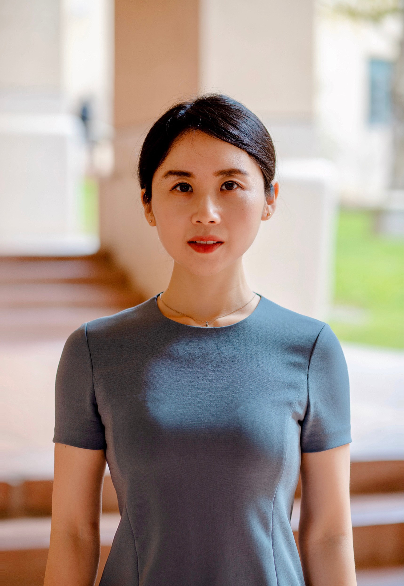

Researching
I study what motivates people to help others — and how organizations can design smarter strategies (including AI tools) to encourage charitable giving, prosocial behavior, and meaningful social impact. My work bridges academic theory with real-world field experiments.
I am an Assistant Professor of Marketing at the Orfalea College of Business, California Polytechnic State University (Cal Poly), San Luis Obispo. I earned my Ph.D. in Marketing from the University of Kansas.
My research explores the psychology behind charitable giving, prosocial incentives, gift-giving, and how emerging technologies like AI can foster empathy and helping behavior. I am passionate about developing evidence-based strategies that nonprofits and social enterprises can actually use.
I partner with organizations including the Salvation Army, Headquarters Counseling Center, the Learning Center, and the SLO Food Bank to run field experiments and generate real-world impact.
Investigating the psychological and social drivers of charitable giving, volunteering, and helping — and how organizations can amplify these behaviors through better marketing design.
Exploring how pregiving incentives signal communal vs. exchange norms — shaping how donors perceive charities and whether they give. Even the physical form of an incentive matters.
Uncovering the asymmetric perceptions between gift-givers and recipients around packaging and presentation — with implications for brands, sustainability, and holiday marketing.
Examining how empathetic AI interactions increase prosocial intentions — including donation and volunteering — and mapping the psychological pathways that drive this effect.
Designing and testing effective nonprofit communication strategies — including how benefactor-focused vs. recipient-focused appeals differently leverage in-group identity to drive donations.
Conducting controlled real-world experiments with partner organizations — from targeted direct mail campaigns to in-person donation drives — for externally valid, actionable insights.
Selected competitive paper sessions, invited presentations, and working papers at leading marketing and consumer behavior conferences.
Curious about my work? Ask my AI research assistant anything about my publications, research interests, teaching, or academic background.
I weave my research findings directly into the classroom — inviting students to question, test, and extend the ideas we explore. My goal is to make consumer behavior both intellectually rigorous and deeply relevant to real-world decisions.
An applied deep-dive into how psychological, social, and cultural forces shape consumer choices — with live research woven throughout the semester.
UndergraduateFoundational marketing strategy — segmentation, targeting, positioning, and brand building — grounded in behavioral evidence and real cases.
UndergraduateQuantitative and qualitative methods for understanding consumers — from experimental design to data analysis and actionable insight generation.
AdvancedWhether you're a fellow researcher, journalist, nonprofit leader, or student — I'd love to hear from you.